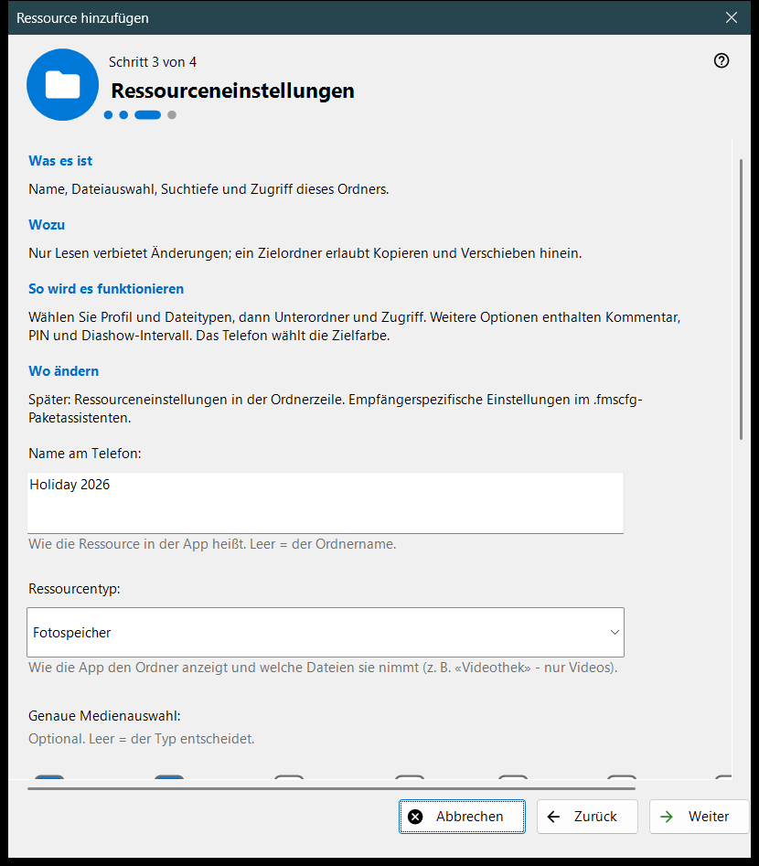
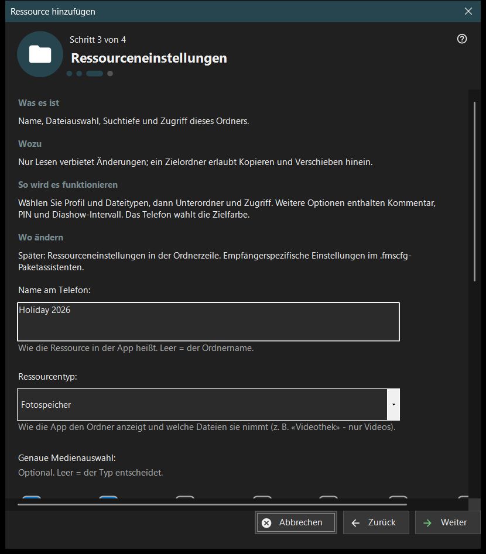

Ressource hinzufügen
Verwendungszweck
Ein kurzer Assistent, der eine freigegebene Ressource hinzufügt: einen Ordner oder ein bereits geöffnetes FileDO-Laufwerk. Er öffnet sich über den Eintrag «Assistent zum Hinzufügen von Ressourcen..» im Menü Hinzufügen.. und aus dem Ablauf beim ersten Start und endet damit, dass die Ressource in die Freigabeliste aufgenommen wird.


In dieser Reihenfolge
- Lesen Sie, was eine Ressource ist, und drücken Sie «Weiter».
- Drücken Sie «Ordner auswählen..» und wählen Sie den Ordner.
- Legen Sie auf der Seite «Ressourceneinstellungen» Name, Typ und Zugriff fest.
- Prüfen Sie die Zusammenfassung und drücken Sie «Fertig».
- Zeigen Sie mit den Schaltflächen der letzten Seite den QR-Code an oder öffnen Sie die Einstellungen.
Die Elemente
Was eine Ressource ist
Eine Ressource ist ein Ordner oder ein geöffnetes virtuelles FileDO-Laufwerk, das der Viewer über diesen PC erreicht. Die Dateien bleiben auf dem Computer; das Telefon durchsucht und kopiert sie über die Verbindung, und ein Ordner mit Häkchen in der Liste wird bereitgestellt.
Ordner auswählen
«Ordner auswählen..» öffnet die übliche Ordnerauswahl und «FileDO-Datenträger..» listet geöffnete Laufwerke auf. Ein Ordner, der schon in der Liste steht, wird mit «Dieser Ordner steht bereits in der Liste.» abgelehnt. Wählen Sie FileDO-Laufwerke, die bereits geöffnet sind; der Assistent erstellt oder bindet sie nicht ein.
Ressourceneinstellungen
Der Name auf dem Telefon, der Typ, die genaue Medienauswahl, die Scanbedingungen und der Zugriff. «Schreibgeschützt» verbietet Änderungen; ein Zielordner erlaubt das Kopieren und Verschieben von Dateien hinein. «Weitere Optionen» enthalten den Kommentar, die PIN und das Diaschau-Intervall. Die Farbe des Zielordners wählt das Telefon.
Ressource und nächste Aktionen
«Fertig» speichert die Einstellungen und fügt die Ressource hinzu; bis dahin ändert ein Abbruch nichts. Die letzte Seite sagt, ob die Ressource bereitgestellt wird. Ist der Server aus, sieht das Telefon sie noch nicht; ist die Bereitstellung nicht bestätigt, prüfen Sie die Einstellungen. «QR-Code anzeigen» öffnet den Zugangscode, «Einstellungen..» die Einstellungen des Managers, «Schließen» verlässt den Assistenten.
Managereinstellungen · SFTP-Freigabeeinstellungen · Einstellungen des Austauschservers